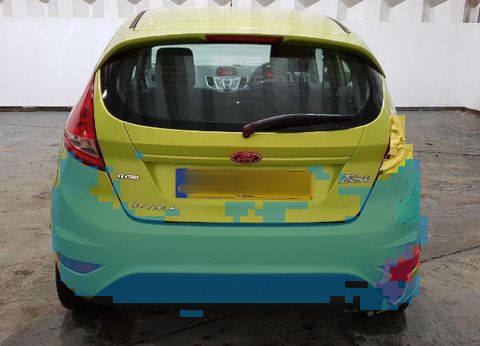

Condición (solo para el revisor): C8 · etiqueta controlada: SUPPORTED

En la evidencia presentada, el vehículo presenta pequeños desconchados de pintura. Esta descripción corresponde al daño observado.
INSUFFICIENT — SUPPORTED: 0.517 · SUSPICIOUS: 0.483 · INSUFFICIENT: 0.000
U = 0.693 (τU = 0.679) · c̄ = 0.750 (τc = 0.000)
Se abstuvo: incertidumbre U=0.693 > τU=0.679
| nodo | tipo | g | c,q,r,u |
|---|---|---|---|
| 0 | claim | 0.490 | [0.5, 1.0, 0.9899, 0.0103] |
| 1 | source | 0.832 | [1.0, 0.8321, 1.0, 0.0] |
| 2 | visual | 0.000 | [1.0, 0.4225, 0.5441, 0.9984] |
| 3 | visual | 0.010 | [1.0, 0.884, 0.3333, 0.9675] |
| 4 | visual | 0.022 | [1.0, 0.7068, 0.4202, 0.9258] |
| 5 | visual | 0.055 | [1.0, 0.7318, 0.4202, 0.8199] |
| 6 | forensic | 0.286 | [1.0, 0.8321, 0.8314, 0.5863] |
| origen | destino | relación | peso g·p |
|---|---|---|---|
| 0 | 2 | support | 0.000 |
| 0 | 3 | support | 0.009 |
| 0 | 4 | support | 0.022 |
| 0 | 5 | support | 0.055 |
| 2 | 5 | overlap | 0.001 |
| 3 | 5 | overlap | 0.001 |